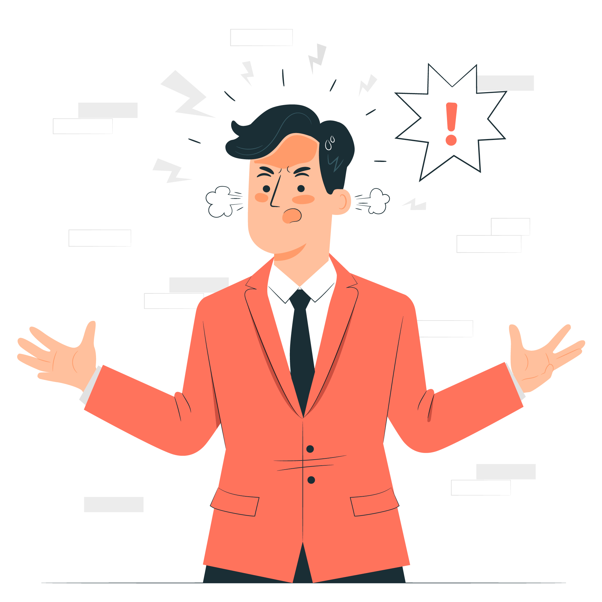
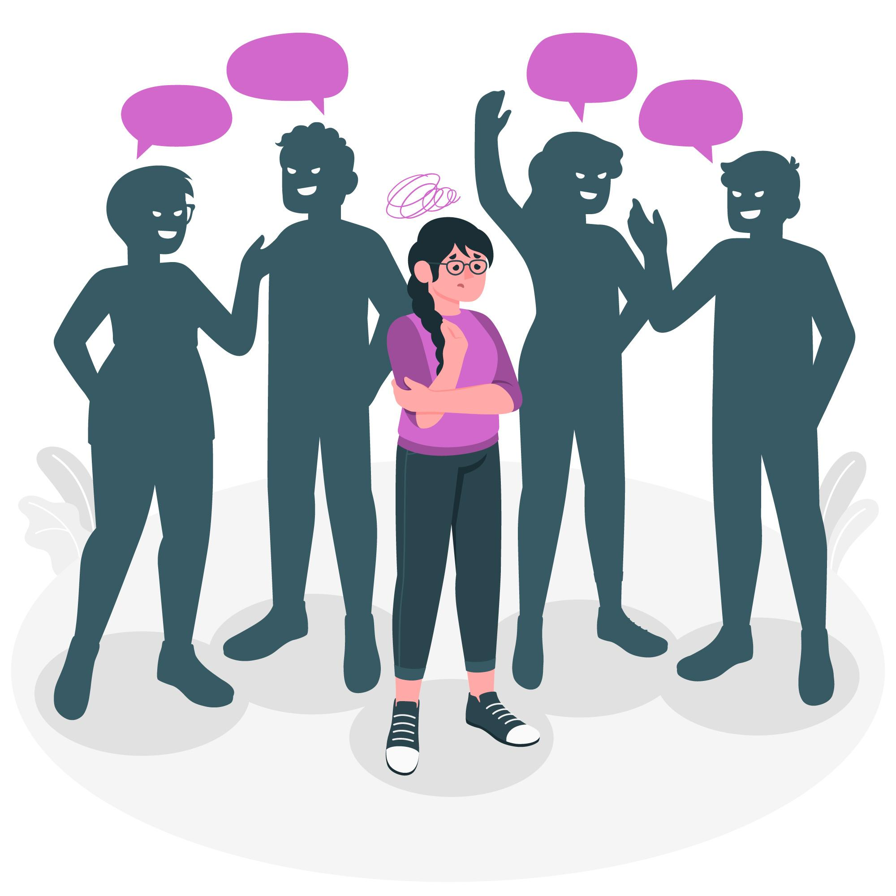
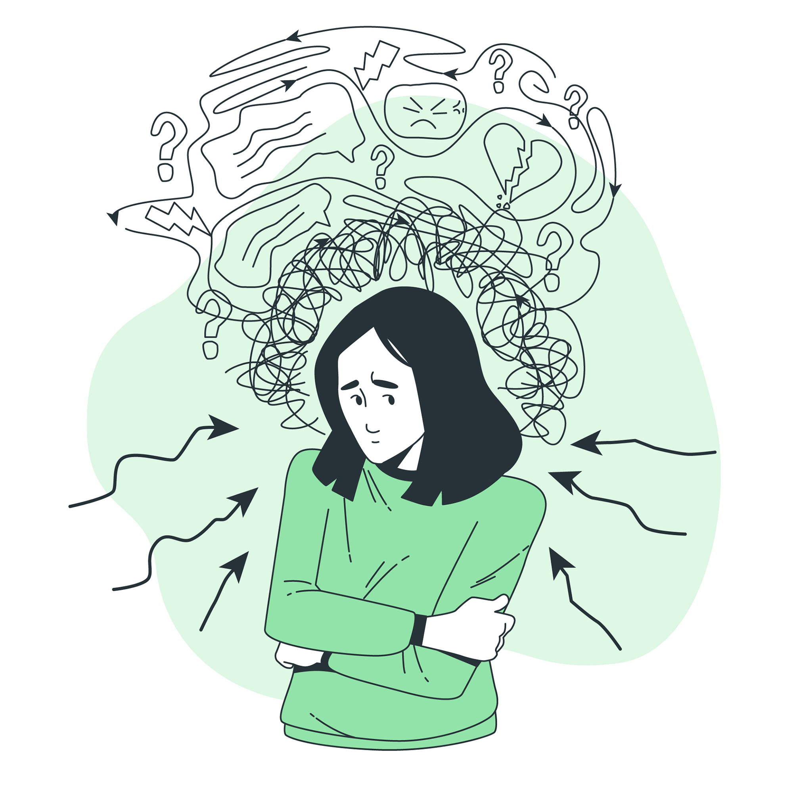

What do you want to discuss about?
Step into your favourite sport for all things mental health- with a side of fun support and all the heart!

Anxiety

Anger

Sadness
Stress

Loneliness

Depressed